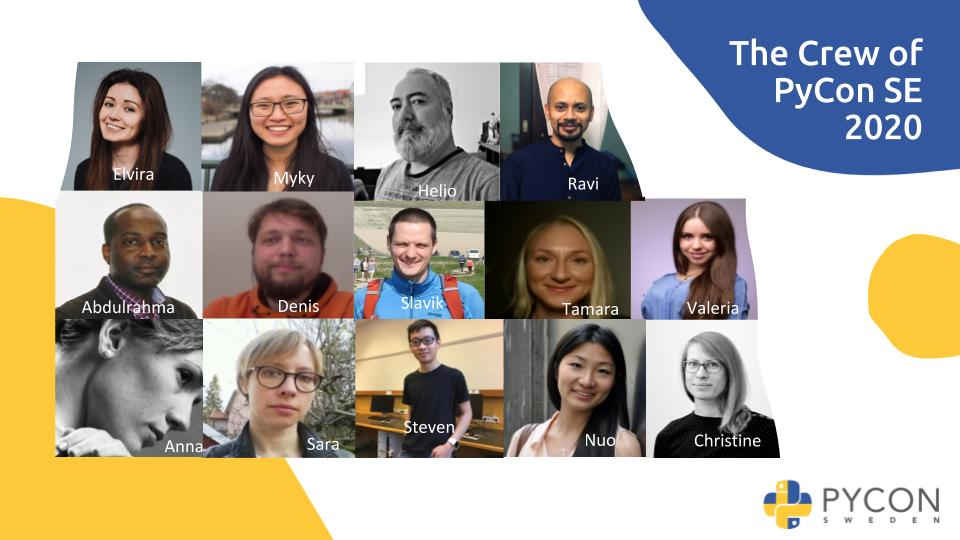

How did PyCon Sweden go online?
2020-11-16
The disruption in the event industry this year did also hit our organizing team at PyCon Sweden 2020 .
Last year we arranged our biggest conference until then. A two day conference with 3 keynotes, 17 talks,
4 workshops and 2 panel discussions at a venue in the heart of Stockholm. For 2020 we had similar plans
and then in March everything changed. Since the conference is usually planned for the fall, we had some
buffer to decide if we even want to consider an on-site conference. We quickly decided against it and to
go fully online instead. This didn't reduce the planning and we had new points to consider opening our registration
up to the world.
With a lot of energy and will we extended
PyCon Sweden 2020 and arranged a 2 day conference with multiple tracks,
4 keynotes, 35 talks, 4 workshops and 2 panel discussions!
Here is a checklist of things we had to do to arrange a conference of this format.
One can invest more time in many of those points, like extended marketing, a remarkable state of the art webpage,
intense participant & sponsor engagement and high entertainment in general.
This checklist is not fully complete. Still it should allow you to arrange a conference with the main points covered.
4 - 5 months before the conference:
Decide on the size (multiple tracks, 2 days)
2 - 3 months before the conference:
1 month before the conference:
2 weeks before the conference:
1 week before the conference:
Conference day:
1 week after the conference:
Of course there are many more things that one could do during preparation time or the conference.
And if there is not a lack of anything it is ideas.
However keep in mind, that the time and energy you can spend on an event like this is
highly dependent on the amount and availability of voluntarily work.
Since we want to keep our heads cool during the conference itself it is wise to prioritise and strike certain
points out in order to give others enough attention. If things go terribly wrong and we are already at maximum
capacity it could mean a total meltdown for some of us and would destroy our team dynamic drastically.
At PyCon Sweden we were incredibly lucky that we found committed volunteers that took full ownership to ensure a
great experience both for the speakers and the audience. And I am thankful for each single contribution!
There are always some hick-ups here and there, especially with technic involved it usually doesn't get easier.
A muted microphone, multiple posts with the same content, loss of connection up to a surrendering computer.
But honestly isn't exactly that the delightful and exciting part of a live conference?
We hope you found the checklist usable and wish you good luck for your online event or conference!
If you are interested in joining our team to prepare PyCon Sweden 2021, reach out to info@pycon.se
Author: Christine Winter, software engineer at H&M, board member of PyCon Sweden and organiser at PyLadies Stockholm.

Interviewing Samira Ali Gomes
2020-11-10
Today we are talking to our keynote Samira Ali Gomes, social entrepreneur and programmes manager at
Impact Hub Kings Cross, who moved to London earlier this year.
She will share her motivation behind starting the initiative EMMSTechnology,
thoughts about Tech as a tool to improve diversity
and insights into the London Tech scene and culture.
Christine: What made you start initiatives like EMMSTechnology and Made in Orten ? And how can we contribute to those initiatives?
Samira: started these initiatives because the services we provide are things
I wish I had access to when I was trying to enter the Tech and Communication industries.
My main goal is to make it easier for other people to access certain opportunities
that aren't available for everyone.
As a Black woman, I often found myself in rooms where I was the only Black woman.
I wanted to create spaces
where I could see other people like me, and where they could see me too and see that
they weren't alone. Representation is one of the most important things.

Christine: Where do you see Tech helping increasing diversity? Where does our responsibility as programmers lie?
Samira: I think Tech can be a great catalyst for diversity and inclusion, Tech can be so accessible and democratise so much in the world. However, Tech really is only a tool and it's up to the people using the tools, such as programmers, developers, and even business people to make sure that the tool is being used fairly and ethically. When the code, text, and work that we as people do can change the lives of hundreds of people, it's important that we in businesses and teams actually start looking at our values and the change we want to be a part of.
Christine: You have recently moved to London, have you noticed particular differences between the Stockholm and London startup or Tech scene?
Samira:The main difference I have noticed is cultural. I personally feel like London has a 'hustler' kind of mentally where everybody constantly is working on something on the side, or just constantly trying to elevate and become better in their work. Swedish people have a sense of this as well, but we need to become more open and almost brag a little bit more about the working that we're doing and not be afraid of constantly raising the bar, taking the next step, and challenging the norms around us.
Christine: You are a social entrepreneur and programmes manager, how does your typical day look like wearing multiple hats?
Samira: My typical day usually starts with me doing my '9 to 5' job as a programmes manager. I usually answer emails and do minor easier tasks in the morning. In the afternoons I like to dive into more complicated and concentrated work, like writing reports, planning programmes, workshops and other sessions. After that I'll do something more personal like cook dinner, work out, or watch a movie to break up my day. Then I'll do my work as a social entrepreneur. We're a very small team at EMMSTech so everybody has to do a little bit of everything. I plan events and activities for our community, liaise with our advisory board, work on content, and so much more.
Christine:How do you see the demand of engineers in startups in the future? And which skills would be good to have?
Samira:There's proven data that there is a lack of people with the tech skills that the world needs in order to keep up with the change that is happening. I feel most traditional institutions are a bit behind on equipping our generation with that skill, while online schools and more modern alternatives are staying on top of the digital curve. Traditional schooling needs to get ahead of that. Most importantly I think there's a lot of soft skills that are lacking in our education. Instead of being afraid of young children using computers and cellphones, we should embrace it and introduce it in a responsible manner. Actually teach them about the internet and digital, talk to them about the values that they should form and teach them to be sensible, ethical human beings.
Thank you Samira for taking the time to answer my questions!
We look forward seeing Samira as our opening keynote on Thursday 12th of November at 09:30 CET!
Author: Christine Winter, software engineer at H&M, board member of PyCon Sweden and organiser at PyLadies Stockholm.
Interviewing Alexander Hultnér
2020-11-02

Today Alexander Hultnér tells us about his first lines in Python and shares
some tips about starting your own business. He also describes how his local Python
community in Gothenburg looks like and what he will explore next in the Python world.
Christine: You have been a loyal attendee and speaker at PyCon Sweden for the last few years. What makes you come back?
Alexander: I love to connect with and contribute back to the Python Community, PyCon Sweden is the best meeting place for us Pythonistas in the Nordics. I hope that we still can achieve some of the social aspects remotely this year. The slack community is a great place for that. I started a digital Nordic Python community on Facebook a couple of years back for the same purposes. We are past 600 members today and growing.
Christine: Which were your first lines of code when you started with Python?
Alexander: The first line I can recall was back in 2013 for a project named PlexConnect, which at the time was one of the very few methods to play your private media on the Apple TV 2/3. The project was very fresh, about two months old and just three former committers. I wanted to help with debugging a few timing issues in the application. And to do that efficiently, I needed to add timestamps to the debugger logs (PlexConnect Github repository). Two years after I transitioned into doing Python full time for Heliospectra, a biotech startup in Gothenburg.
Christine: You are running your own business, what can you recommend people to do that are thinking about starting their own?
Alexander: I've listed five recommendations for people thinking about starting their own business.
- Find your first customers before you make the jump, which might take more time than you think.
- Don't be too picky before you've built up some financial buffer. Consulting is a great way to generate some positive cash flow, even if your dream is to build the next great product.
- Make sure that you save up so you can handle at least half a year without a salary. Even with a contracting gig day one, you still need to work a month before billing, and commonplace with 30 days more before payment is due, and I've seen as high as 60 days. Combined with this, in the best case, you'll be able to pay a salary month 3 or 4 of working full time in your business.
- Stay lean, keep expenses low in the start, you might desire to buy the beefiest workstation when the first check clears. But you never know when a global pandemic will hit with customers withdraw all ongoing contracts, having some extra headroom has saved me from tons of worry and grief.
- Use your network, the people you've worked with knows who you are and what you can do. But don't steal customers from your existing employer.
Christine: How is the Python community and Tech scene in Gothenburg?
Alexander:
There's a thriving and growing tech-scene in Gothenburg, an accomplished
technical university like Chalmers attracts the talent that builds tomorrows
tech. We've got a mix of everything from bleeding-edge startups to established
industry giants like Ericsson, Volvo and SKF.
On the event side, one of my favourite events is the fantastic
foss-north
conference where I've also spoken about Python. Johan Thelin does a marvellous
job every year with organizing it, and I'd highly recommend people to come and
visit it once the current situation settles.
When it comes to the Python community, there's a thriving user group, namely
GothPy
organized by Emily Bache, and before the pandemic hit GothPy held an
event about every other month. It is a great way to hang out with the local
Python community and a perfect place to get some experience with talking about
Python in front of a slightly smaller crowd. It's great fun to see what other
Pythonistas are doing around town.
But I'd love to see more businesses from Gothenburg talk about how they use
Python and what problems and successes they may have, it can sometimes feel
like drowning in a sea of C# in particular.
Christine: Which framework or packages will you explore next?
Alexander:
Right now I'm building a new product using a trifecta of FastAPI, Pydantic
and Schemathesis. These tools enable me to create lean, async, extensively
tested APIs with minimal effort. I'm a contributor and co-maintainer of
Schemathesis which enables APIs using OpenAPI (formerly known as Swagger)
or GraphQL to automatically generate tens of thousands of tests, reaching
deep into the code paths, purely based on the schema specification and
optional custom rules. You can watch
my
EuroPython talk on YouTube.
I can also help your company with this if you reach out to me directly via my website
https://hultner.se
Thank you a lot Alexander for sharing your experiences and tips with us today!
We cannot wait to see Alexander's keynote which will go live on
Friday 13th of November at 09:00 CET.
To receive the latest updates during and the link to our conference
Slack workspace register
here.
Author: Christine Winter, software engineer at H&M, board member of PyCon Sweden and organiser at PyLadies Stockholm.
Interviewing Ákos Hochrein
2020-10-28
Today our keynote Ákos Hochrein, engineering manager at Prezi,
shares his first steps learning Python, learning resources that could be helpful for you,
some insights into Berlin's Python scene and the advantage of microservices.
Christine: How did you start up with Python and what made you continue using it?
Ákos: I started using Python at my first job around 10 years ago. Back then I was working as a consultant transforming and moving data from systems to systems for big companies. I was fairly new to the industry and my competence was in Java (don't ask why) and the language didn't really help me write understandable transforms and code with complicated business rules. Around this time I had a class called "Scripting languages" at Uni which introduced me to the world of Python (and Ruby, but let's leave that for now where it is), and I couldn't go back since. I started writing most of my code in Python and afterwards nailed a full-time job with it. I have been in love ever since.

Christine: How is the Python community and developer scene in Berlin?
Ákos: Berlin is a hot spot right now for software development. The youngness of the
unification of the two Germanies created a very buzzing and exciting vibe for young
talent to come here and work in the historical streets and neighbourhoods where new
meets old. Germany is a very open space for people from both outside and inside the
EU to work here, helping many from around the world to bring their work ethic and
knowledge and mix these together to learn and create something new and cool.
The Python community is strong in the city as well! The Python User Group (PUB)
has regular events where Pythonistas are sharing their knowledge.
Christine: What would you suggest a newbie in Python or in particular web development to learn/read/try out?
Ákos: Great question! My brother started studying software engineering in the past year and he was struggling with the basics of algorithm development because of the unnatural syntax and fine-controlled nature of the C language. Since then he picked up Python and he became a better programmer with more solid algorithms knowledge and more confidence in touching more difficult languages. I got him a book called "Automate the Boring Stuff" with Python by Al Sweigart to give him more inspiration on what code is capable of doing. Regarding web-development in general, my wife started looking into freecodecamp.org recently and she likes it a lot. Hard to beat free. :)
Christine: You wrote a whole book about microservices. Where do you see the biggest advantage for microservices?
Ákos: I believe that the biggest advantage of microservices is the separation of concern. Building a monolith for your pet-project or at your early stage company is the way to go business-wise. It will let you move fast, experiment more and ultimately grow in difficult times. But just like putting too many things into a room and not being able to move around, monolithic applications also get cluttered and even with the best intent of organization, you will need to move a couple of things to different rooms. With separation of concern, you can help your teams focus on the things that they are good at and have them not worry about stepping on other people's toes. Bear in mind, all of this comes at a cost of communication both on the network and the team level.
Christine: Besides development you also work as an Engineering Manager. What does that role include and how does a day look like for you?
Ákos: Today, I would say that it's a little bit the other way around, I am working as an EM and when it's needed I jump the gun and write some emergency code. I like the question, but will keep the answer for my talk! :)
Thank you Ákos for taking the time to answer my questions!
We look forward seeing Ákos on our virtual stage!
Make sure to mark his keynote on
Thursday 12th of November at 15:00 CET in your calender or
register
to receive the latest update about the conference and join the Slack workspace.
Author: Christine Winter, software engineer at H&M, board member of PyCon Sweden and organiser at PyLadies Stockholm.